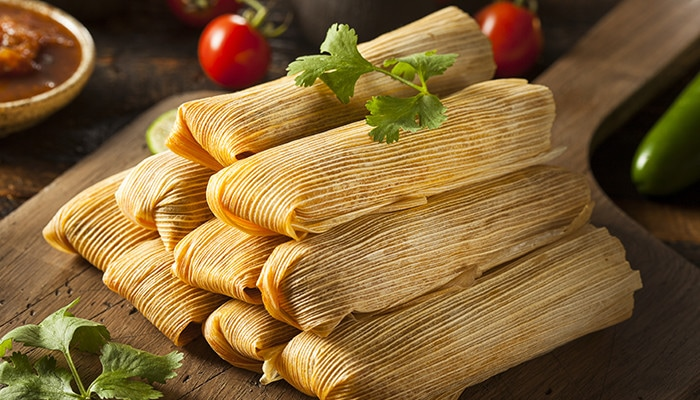
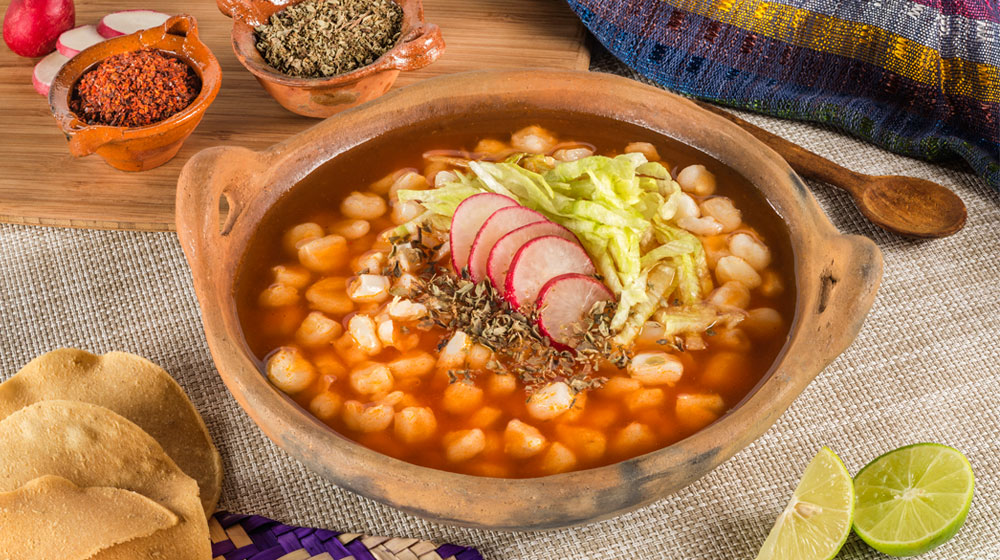
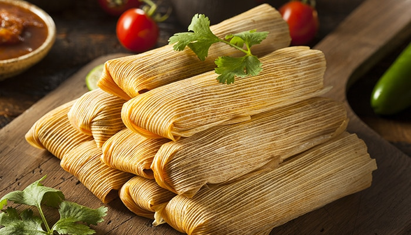
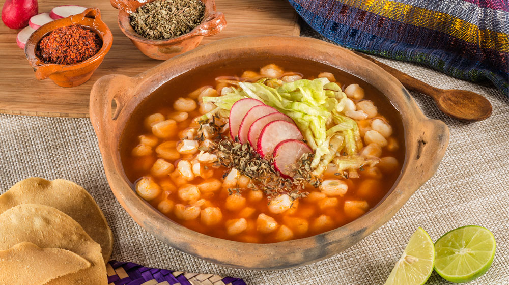

Los mejores alimentos de México
- Tacos
- Torta ahogada
- Quesadillas
- Mole
- Tamales
- Pozole
- Cochinita pibil
- Chiles en nogada
- Enchiladas
- Menudo
Tamales
Pozole
Haz click aquí para más información sobre la comida mexicana
Tamales
Pozole
Haz click aquí para más información sobre la comida mexicana